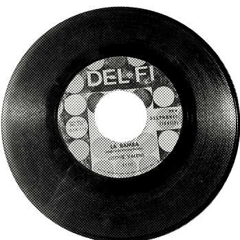

A self-taught musician, Valenzuela was an accomplished singer and guitarist. At his appearances, Valenzuela often improvised new lyrics and added new riffs to popular songs while he was playing.
Bob Keane, the owner and president of small record label Del-Fi Records in Hollywood, was given a tip in May 1958 by San Fernando High School student Doug Macchia about a young performer from Pacoima by the name of Richard Valenzuela. Kids knew the performer as "the Little Richard of San Fernando". Swayed by the Little Richard comparison, Keane went to see Valenzuela play a Saturday-morning matinée at a movie theater in San Fernando. Impressed by the performance, he invited Valenzuela to audition at his home in the Silver Lake area of Los Angeles, where he had a small recording studio in his basement. His recording equipment comprised an early stereo recorder (a two-track Ampex 601-2 portable) and a pair of Neumann U-47 condenser microphones. After this first audition, Keane signed Valenzuela to Del-Fi on May 14, 1958. At this point, the musician took the name "Ritchie" because, as Keane said, "There were a bunch of 'Richards' around at that time, and I wanted it to be different." Similarly, Keane recommended shortening his surname to "Valens" from Valenzuela to widen his appeal beyond any obvious ethnic group. Valens was ready to enter the studio with a full band backing him. The musicians included René Hall, Carol Kaye, and Earl Palmer. The first songs recorded at Gold Star Studios, at a single studio session one afternoon in May 1958, were "Come On, Let's Go", an original, credited to Valens/Kuhn (Keane's real name), and "Framed", a Leiber and Stoller tune. Pressed and released within days of the recording session, the record was a success. Valens' next record, a double A-side, had the song "Donna" (written about a real girlfriend Donna Ludwig) coupled with "La Bamba". It sold over one million copies, and was awarded a gold disc by the Recording Industry Association of America.
By the autumn of 1958, the demands of Valens's career forced him to drop out of high school. Keane booked appearances at venues across the United States and performances on television programs.
On October 6, 1958, Valens made his first appearance on Dick Clark's American Bandstand singing "Come On, Let's Go". Soon after, Valens traveled to Honolulu, Hawaii, to perform under the banner of the "11th Show of Stars". On December 10, 1958, after his trip to Honolulu, Valens made an appearance back at Pacoima Junior High School (now Pacoima Middle School). This concert was posthumously released as Ritchie Valens in Concert at Pacoima Jr. High; it was Valens' only live performance ever recorded. In mid-December 1958, Valens left for New York City. Keane had managed to book him as a late addition to "Alan Freed's Christmas Jubilee Show" where Valens performed with The Everly Brothers, Bo Diddley, Chuck Berry, Jackie Wilson, Eddie Cochran and others. On December 27, Valens performed "Donna" on The Dick Clark Show. He played a few more shows in New York, including his only performance at the famous Apollo Theater. On January 17, 1959, he appeared at West Covina High School with Sam Cooke for a student organized fundraiser called "The Teen Canteen Foundation".